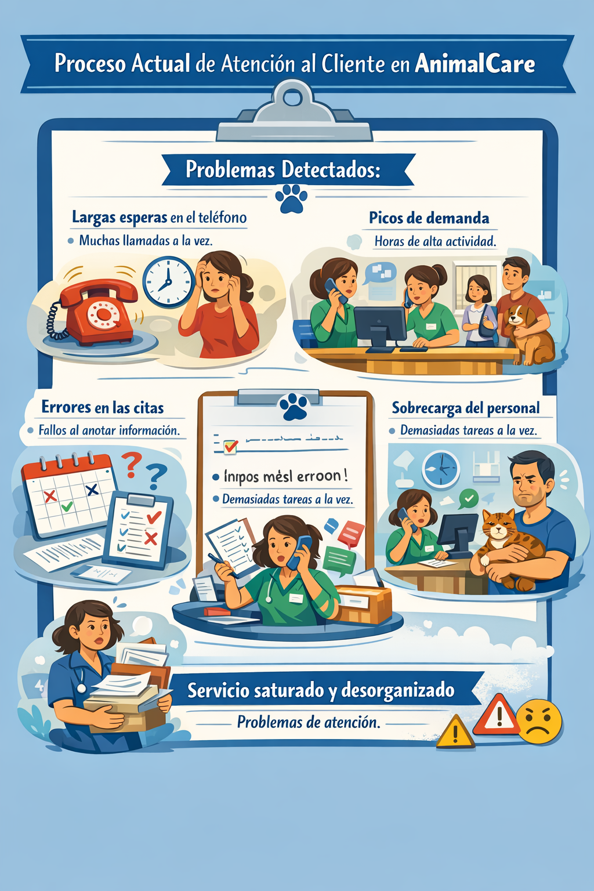

Proceso elegido: Atención al cliente
Funcionamiento actual del proceso:
Actualmente, la atención al cliente en AnimalCare se realiza de forma mayoritariamente manual. Los clientes llaman por teléfono o acuden presencialmente para solicitar citas, resolver dudas básicas o pedir información sobre tratamientos y cuidados. El personal de recepción se encarga de atender las llamadas, anotar las citas y responder a las consultas.
Problemas detectados:
Este sistema presenta varias dificultades:
- Elevados tiempos de espera cuando hay muchas llamadas simultáneas.
- Dificultad para gestionar picos de demanda en horas concretas del día.
- Posibles errores humanos en la anotación de citas o en la transmisión de información.
- Sobrecarga del personal de recepción, que debe atender varias tareas a la vez.
- Disminución de la calidad del servicio y de la satisfacción del cliente en momentos de alta demanda.
